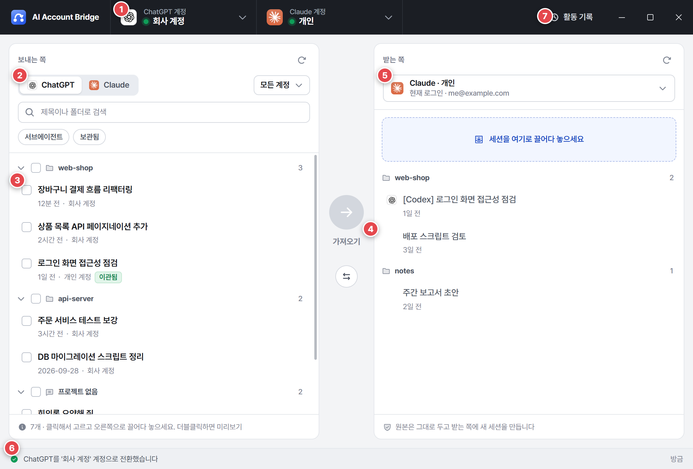
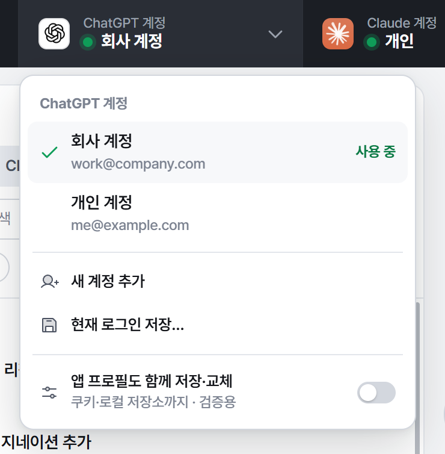
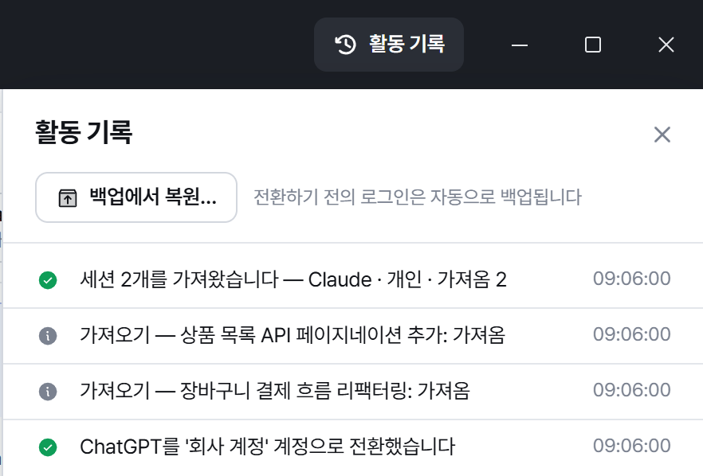
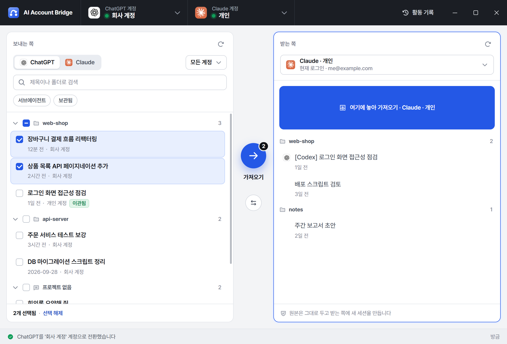
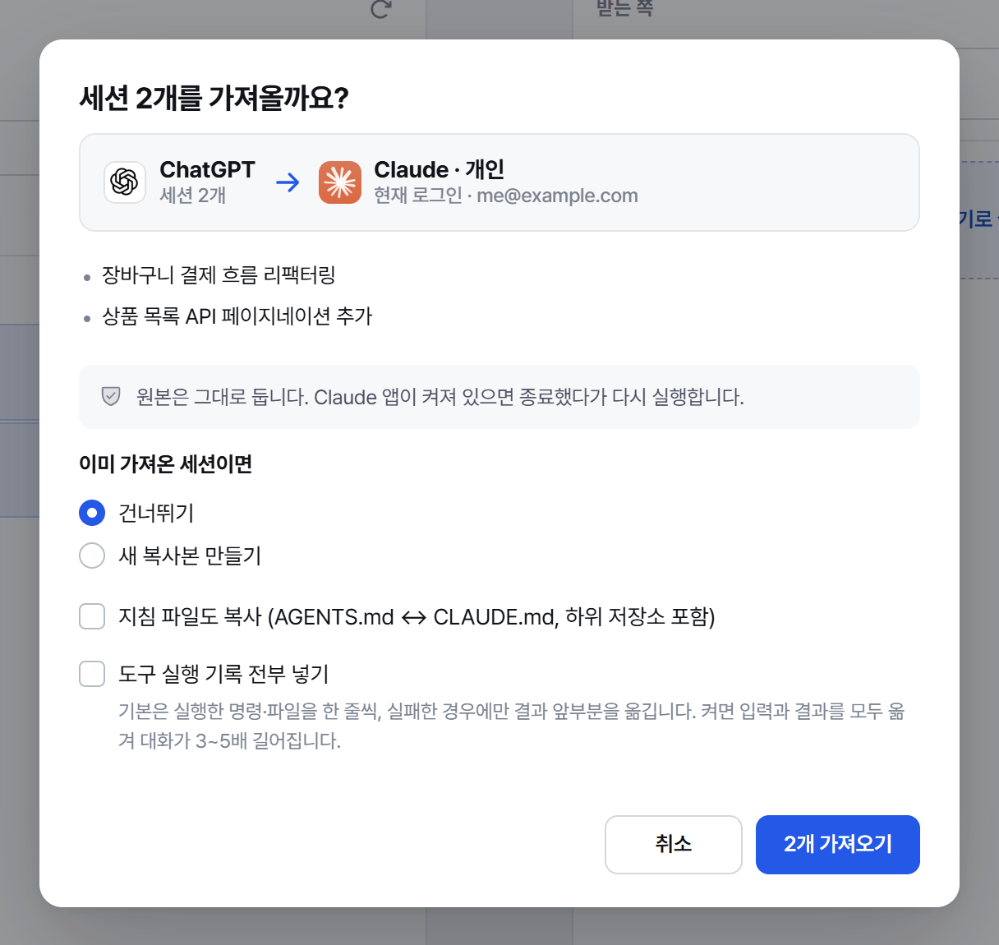
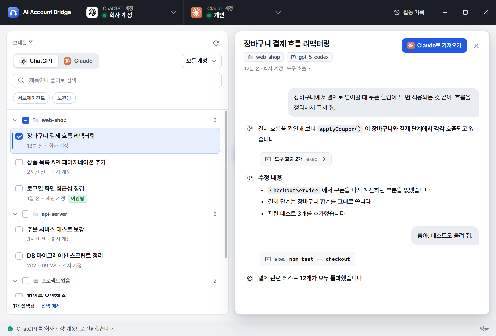

AI Account Bridge 사용 설명서
ChatGPT(Codex)·Claude 데스크톱 앱의 계정 전환과 대화 옮기기
ChatGPT(Codex)·Claude 데스크톱 앱의 계정 전환과 대화 옮기기
AI Account Bridge_{{version}}_x64-setup.exe(약 25MB)를 실행합니다.%USERPROFILE%\.ai-account-bridge)은 남습니다.
메뉴에서 바꿀 계정을 누르면 앱을 닫고 → 로그인 정보를 바꾸고 → 다시 엽니다(몇 초). 계정 줄에 마우스를 올리면 나오는 연필·휴지통으로 이름 변경·삭제를 합니다. 삭제는 이 앱의 저장본만 지우고 앱의 실제 로그인은 그대로 둡니다.

작업 결과는 상태 표시줄과 오른쪽 위 활동 기록에 남고, 경고·오류는 알림으로 뜹니다.
계정을 전환하기 전의 로그인은 자동으로 백업됩니다. 전환이 꼬였다면 [활동 기록] → [백업에서 복원…]에서 백업 파일을 고르면 그때 상태로 되돌아갑니다.


| 보내는 쪽 → 받는 쪽 | 결과 |
|---|---|
| ChatGPT → Claude | Claude의 Code 탭에 [Codex] 제목으로 추가 |
| Claude → ChatGPT | Codex 앱에 [Claude] 제목으로 추가 |
| Claude 계정 A → B | B 계정에 복사본을 만듦(Code 세션만) |

세션을 더블클릭(또는 Enter, 눈 아이콘)하면 오른쪽에 대화가 열립니다. 답변은 마크다운으로 보이고, 이어진 도구 호출은 “도구 호출 N개” 한 줄로 접혀 있다가 누르면 펼쳐집니다. 미리보기 위의 버튼으로 바로 가져올 수도 있습니다.

| Ctrl+F | 검색 |
| F5 | 새로고침 |
| Ctrl+A | 모두 선택 |
| Ctrl+Enter | 고른 세션 가져오기 |
| ↑↓ Space Enter | 이동 · 선택 · 미리보기 |
| Esc | 닫기 / 선택 해제 |
%USERPROFILE%\.ai-account-bridge에 남습니다. 완전히 지우려면 이 폴더도 삭제하세요.비공식 커뮤니티 도구이며 OpenAI·Anthropic과 관계없습니다. 앱 내부 파일 형식에 의존하므로 앱이 업데이트되면 동작하지 않을 수 있습니다. 본인 소유 계정 간 전환 용도로만 사용하세요.